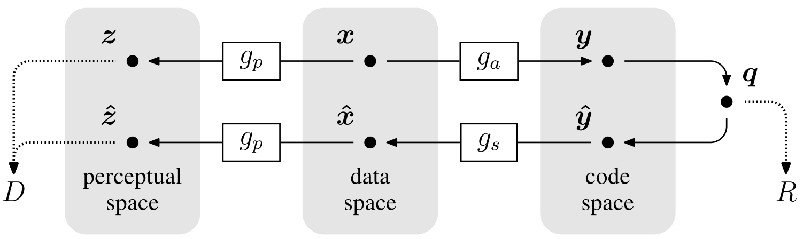

End-to-End Optimized Image Compression¶
Data compression is commonly formulated with the goal of designing codes for a given discrete data ensemble with minimal entropy. In the context, known as the lossy compression problem, one must trade off two competing costs: the entropy of the discretized representation (rate) and the error arising from the quantization (distortion).
Most existing image compression methods operate by linearly transforming the data vector into a suitable continuous-valued representation, quantizing its elements independently, and then encoding the resulting discrete representation using a lossless entropy code. This is called transform coding due to the central role of the transformation.
The authors propose a framework for end-to-end optimization of an image compression model, consisting of a nonlinear analysis transformation, a uniform quantizer, and a nonlinear synthesis transformation. Using a variant of SGD, they jointly optimize the entire model for rate-distortion performance over a dataset of training images.
Experiment results show that the optimized method generally exhibits better rate-distortion performance than JPEG and JPEG 2000. The authors also observe an improvement in visual quality for all images at all bit rates, as measured by MS-SSIM.
{kind=link}
Choice of Forward, Inverse, and Perceptual Transforms¶
The authors use a generlaized divisive normalization (GDN) transform with optimized parameters. It has previously been shown to be highly efficient in Gaussianizing the local joint statistics of natural images.
The analysis transform \(g_a\) consists of three stages of convolution, subsampling, and divisive normalization. The synthesis transform \(g_s\) consists of three stages, with the order of operations reversed within each stage, downsampling replaced by upsampling, and GDN replaced by an approximate inverse called IGDN.